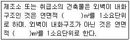
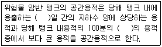
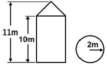
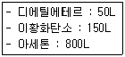

위험물기능사 (2011-10-09 기출문제)
1과목: 화재 예방과 소화방법
1. 위험물안전관리법에서 정하는 용어의 정의로 옳지 않은 것은?
- “위험물”이라 함은 인화성 또는 발화성 등의 성질을 가지는 것으로서 대통령령이 정하는 물품을 말한다.
- “제조소”라 함은 위험물을 제조할 목적으로 지정수량 이상의 위험물을 취급하기 위하여 규정에 따른 허가를 받은 장소를 말한다.
- “저장소”라 험은 지정수량 이상의 위험물을 저장하기 위한 대통령령이 정하는 장소로서 규정에 따른 허가를 받은 장소를 말한다.
- “취급소”라 함은 지정수량 이상의 위험물을 제조외의 목적으로 취급하기 위한 관할 지자체장이 정하는 장소로서 허가를 받은 장소를 말한다.
(정답률: 63%)

2. 위험물안전관리법령에서 정한 이산화탄소 소화약제의 저장용기 설치기준으로 옳은 것은?
- 저압식 저장용기의 충전비 : 1.0 이상 1.3 이하
- 고압식 저장용기의 충전비 : 1.3 이상 1.7 이하
- 저압식 저장용기의 충전비 : 1.1 이상 1.4 이하
- 고압식 저장용기의 충전비 : 1.7 이상 2.1 이하
(정답률: 48%)
3. 지정과산화물을 저장하는 옥내저장소의 저장창고를 일정면적마다 구획하는 격벽의 설치기준에 해당하지 않는 것은?
- 저장창고 상부의 지붕으로부터 50㎝ 이상 돌출하게 하여야 한다.
- 저장창고 양측의 외벽으로부터 1m 이상 돌출하게 하여야 한다.
- 철근콘크리트조의 경우 두께가 30㎝ 이상이어야 한다.
- 바닥면적 250m2 이내마다 완전하게 구획하여야 한다.
(정답률: 54%)
4. 옥내저장소에서 지정수량의 몇 배 이상을 저장 또는 취급할 때 자동화재탐지설비를 설치하여야 하는가? (단, 원칙적인 경우에 한한다.)
- 지정수량의 10배 이상을 저장 또는 취급할 때
- 지정수량의 50배 이상을 저장 또는 취급할 때
- 지정수량의 100배 이상을 저장 또는 취급할 때
- 지정수량의 150배 이상을 저장 또는 취급할 때
(정답률: 58%)
5. 폭굉유도거리(DID)가 짧아지는 경우는?
- 정상 연소속도가 작은 혼합가스일수록 짧아진다.
- 압력이 높을수록 짧아진다.
- 관지름이 넓을수록 짧아진다.
- 점화원 에너지가 약할수록 짧아진다.
(정답률: 81%)
6. A, B, C급에 모두 적응할 수 있는 분말소화약제는?
- 제1종 분말
- 제2종 분말
- 제3종 분말
- 제4종 분말
(정답률: 91%)
7. 할로겐화합물의 소화약제 중 할론 2402의 화학식은?
- C2Br4F2
- C2Cl4F2
- C2Cl4Br2
- C2F4Br2
(정답률: 77%)
8. 톨루엔의 화재 시 가장 적합한 소화방법은?
- 산ㆍ알칼리 소화기에 의한 소화
- 포에 의한 소화
- 다량의 강화액에 의한 소화
- 다량의 주수에 의한 냉각소화
(정답률: 55%)
9. 제2류 위험물 중 지정수량이 500kg인 물질에 의한 화재는?
- A급 화재
- B급 화재
- C급 화재
- D급 화재
(정답률: 76%)
10. 피난동선의 특징이 아닌 것은?
- 가급적 지그재그의 복잡한 형태가 좋다.
- 수평동선과 수직동선으로 구분한다.
- 2개 이상의 방향으로 피난할 수 있어야 한다.
- 가급적 상호 반대방향으로 다수의 출구와 연결되는 것이 좋다.
(정답률: 87%)
11. 정전기의 발생요인에 대한 설명으로 틀린 것은?
- 접촉면적이 클수록 정전기의 발생량은 많아진다.
- 분리속도가 빠를수록 정전기의 발생량은 많아진다.
- 대전서열에서 먼 위치에 있을수록 정전기의 발생량은 많아진다.
- 접촉과 분리가 반복됨에 따라 정전기의 발생량은 증가한다.
(정답률: 35%)
12. 제거소화의 예가 아닌 것은?
- 가스 화재 시 가스 공급을 차단하기 위해 밸브를 닫아 소화시킨다.
- 유전 화재 시 폭약을 사용하여 폭풍에 의하여 가연성 증기를 날려 보내 소화시킨다.
- 연소하는 가연물을 밀폐시켜 공기 공급을 차단하여 소화한다.
- 촛불 소화 시 입으로 바람을 불어서 소화시킨다.
(정답률: 69%)
13. 제3종 분말 소화약제의 열분해 반응식을 옳게 나타낸 것은?
- NH4H2PO4 → HPO3＋NH3＋H2O
- 2KNO3 → 2KNO2＋O2
- KCl O4 → KCl＋2O2
- 2CaHCO3 → 2CaO＋H2CO3
(정답률: 81%)
14. 목조건축물의 일반적인 화재현상에 가장 가까운 것은?
- 저온단시간형
- 저온장시간형
- 고온단시간형
- 고온장시간형
(정답률: 67%)
15. 위험물제조소등에 설치하여야 하는 자동화재탐지설비의 설치기준에 대한 설명 중 틀린 것은?
- 자동화재탐지설비의 경계구역은 건축물 그 밖의 공작물의 2 이상의 층에 걸치도록 할 것
- 하나의 경계구역에서 그 한 변의 길이는 50m(광전식분리형 감지기를 설치할 경우에는 100m) 이하로 할 것
- 자동화재탐비설비의 감지기는 지붕 또는 벽의 옥내에 면한 부분에 유효하게 화재의 발생을 감지할 수 있도록 설치할 것
- 자동화재탐지설비에는 비상전원을 설치할 것
(정답률: 79%)
16. 옥외탱크저장소에 보유공지를 두는 목적과 가장 거리가 먼 것은?
- 위험물시설의 화염이 인근의 시설이나 건축물 등으로의 연소확대방지를 위한 완충공간 기능을 하기 위함
- 위험물시설의 주변에 장애물이 없도록 공간을 확보함으로 소화활동이 쉽도록 하기 위함
- 위험물시설의 주변에 있는 시설과 50m 이상을 이격하여 폭발 발생 시 피해를 방지하기 위함
- 위험물시설의 주변에 장애물이 없도록 공간을 확보함으로 피난자가 피난이 쉽도록 하기 위함
(정답률: 53%)
17. 할론 1301의 증기 비중은? (단, 불소의 원자량은 19, 브롬의 원자량은 80, 염소의 원자량은 35.5이고 공기의 분자량은 29이다.)
- 2.14
- 4.15
- 5.14
- 6.15
(정답률: 66%)
18. 탄화알루미늄을 저장하는 저장고에 스프링클러소화설비를 하면 되지 않는 이유는?
- 물과 반응 시 메탄가스를 발생하기 때문에
- 물과 반응 시 수소가스를 발생하기 때문에
- 물과 반응 시 에탄가스를 발생하기 때문에
- 물과 반응 시 프로판가스를 발생하기 때문에
(정답률: 60%)
19. 소화효과를 증대시키기 위하여 분말소화약제와 병용하여 사용할 수 있는 것은?
- 단백포
- 알코올형포
- 합성계면활성제포
- 수성막포
(정답률: 46%)
20. 위험물은 지정수량의 몇 배를 1소요 단위로 하는가?
- 1
- 10
- 50
- 100
(정답률: 86%)
2과목: 위험물의 화학적 성질 및 취급
21. 낮은 온도에서도 잘 얼지 않는 다이너마이트를 제조하기 위해 니트로글리세린의 일부를 대체하여 첨가하는 물질은?
- 니트로셀룰로오스
- 니트로글리콜
- 트리니트로톨루엔
- 디니트로벤젠
(정답률: 43%)
22. 제조소등의 소화설비 설치 시 소요단위 산정에 관한 내용으로 다음 ( ) 안에 알맞은 수치를 차례대로 나열한 것은?

- 200, 100
- 150, 100
- 150, 50
- 100, 50
(정답률: 71%)
23. 제조소등의 허가청이 제조소등의 관계인에게 제조소등의 사용정지처분 또는 허가취소처분을 할 수 있는 사유가 아닌 것은?
- 소방서장으로부터 변경허가를 받지 아니하고 제조소등의 위치구조 또는 설비를 변경한 때
- 소방서장의 수리 개조 또는 이전의 명령을 위반한 때
- 정기점검을 하지 아니한 때
- 소방서장의 출입검사를 정당한 사유 없이 거부한 때
(정답률: 56%)
24. 제6류 위험물을 수납한 용기에 표시하여야 하는 주의사항은?
- 가연물접촉주의
- 화기엄금
- 화기·충격주의
- 물기엄금
(정답률: 71%)
25. 운송책임자의 감독, 지원을 방아 운송하여야 하는 위험물에 해당하는 것은?
- 칼륨, 나트륨
- 알킬알루미늄, 알킬리튬
- 제1석유류, 제2석유류
- 니트로글리세린, 트리니트로톨루엔
(정답률: 83%)
26. 황린에 대한 설명으로 틀린 것은?
- 환원력이 강하다.
- 담황색 또는 백색의 고체이다.
- 벤젠에는 불용이나 물에 잘 녹는다.
- 마늘 냄새와 같은 자극적인 냄새가 난다.
(정답률: 65%)
27. 질산과 과염소산의 공통 성질에 대한 설명 중 틀린 것은?
- 산소를 포함한다.
- 산화제이다.
- 물보다 무겁다.
- 쉽게 연소한다.
(정답률: 51%)
28. 이산화탄소소화설비의 기준에서 저장용기 설치 기준에 관한 내용으로 틀린 것은?
- 방호구역 외의 장소에 설치할 것
- 온도가 50℃ 이하이고 온도 변화가 적은 장소에 설치할 것
- 직사일광 및 빗물이 침투할 우려가 적은 장소에 설치할 것
- 저장용기에는 안전장치를 설치할 것
(정답률: 47%)
29. HO-CH2CH2-OH의 지정수량은 몇 L인가?
- 1000
- 2000
- 4000
- 6000
(정답률: 39%)
30. 위험물에 대한 설명으로 옳은 것은?
- 칼륨은 수은과 격렬하게 반응하며 가열하면 청색의 불꽃을 내며 연소하고 열과 전기의 부도체이다.
- 나트륨은 액체 암모니아와 반응하여 수소를 발생하고 공기 중 연소 시 황색 불꽃을 발생한다.
- 칼슘은 보호액인 물속에 저장하고 알코올과 반응하여 수소를 발생한다.
- 리튬은 고온의 물과 격렬하게 반응해서 산소를 발생한다.
(정답률: 53%)
31. 옥내저장소에서 위험물을 유별로 정리하고 서로 1m 이상의 간격을 두는 경우 유별을 달리하는 위험물을 동일한 저장소에 저장할 수 있는 것은?
- 과산화나트륨과 벤조일퍼옥사이드
- 과염소산나트륨과 질산
- 황린과 트리에틸알루미늄
- 유황과 아세톤
(정답률: 55%)
32. 다음 중 인화점이 가장 낮은 것은?
- 산화프로필렌
- 벤젠
- 디에틸에테르
- 이황화탄소
(정답률: 50%)
33. 디에틸에테르의 안전관리에 관한 설명 중 틀린 것은?
- 증기는 마취성이 있으므로 증기 흡입에 주의하여야 한다.
- 폭발성의 과산화물 생성을 요오드화칼륨 수용액으로 확인하다.
- 물에 잘 녹으므로 대규모 화재 시 집중 주수하여 소화한다.
- 정전기 불꽃에 의한 발화에 주의하여야 한다.
(정답률: 67%)
34. 위험물의 운반에 관한 기준에서 다음 위험물 중 혼재 가능한 것끼리 연결된 것은? (단, 지정수량의 10배 이다.)
- 제1류 - 제6류
- 제2류 - 제3류
- 제3류 - 제5류
- 제5류 - 제1류
(정답률: 85%)
35. 경유 옥외탱크저장소에서 10000리터 탱크 1기가 설치된 곳의 방유제 용량은 얼마 이상이 되어야 하는가?
- 5000리터
- 10000리터
- 11000리터
- 20000리터
(정답률: 63%)
36. 벤젠, 톨루엔의 공통된 성상이 아닌 것은?
- 비수용성의 무색 액체이다.
- 인화점은 0℃ 이하이다.
- 액체의 비중은 1보다 작다.
- 증기의 비중은 1보다 크다.
(정답률: 52%)
37. 위험물안전관리법상 품명이 유기금속화합물에 속하지 않는 것은?
- 트리에틸칼륨
- 트리에틸알루미늄
- 트리에틸인듐
- 디에틸아연
(정답률: 35%)
38. 니트로셀룰로오스에 대한 설명으로 옳은 것은?
- 물에 녹지 않으며 물보다 무겁다.
- 수분과 접촉하는 것은 위험하다.
- 질화도와 폭발위험성은 무관하다.
- 질화도가 높을수록 폭발 위험성이 낮다.
(정답률: 50%)
39. 다음 ( )안에 알맞은 수치를 차례대로 옳게 나열한 것은?

- 1, 7
- 3, 5
- 5, 3
- 7, 1
(정답률: 80%)
40. 서로 접촉하였을 때 발화하기 쉬운 물질을 연결한 것은?
- 무수크롬산과 아세트산
- 금속나트륨과 석유
- 니트로셀룰로오스와 알코올
- 과산화수소와 물
(정답률: 35%)
41. HNO3에 대한 설명으로 틀린 것은?(오류 신고가 접수된 문제입니다. 반드시 정답과 해설을 확인하시기 바랍니다.)
- Al, Fe은 진한 질산에서 부동태를 생성해 녹지 않는다.
- 질산과 염산을 3:1비율로 제조한 것을 왕수라고 한다.
- 부식성이 강하고 흡습성이 있다.
- 직사광선에서 분해하여 NO2를 발생한다.
(정답률: 61%)
42. 위험물 제1종 판매취급소의 위치, 구조 및 설비의 기준으로 틀린 것은?
- 천장을 설치하는 경우에는 천장을 불연재료로 할 것
- 창 및 출입구에는 갑종방화문 또는 을종방화문을 설치할 것
- 건축물의 지하 또는 1층에 설치할 것
- 위험물을 배합하는 실의 바닥면적은 6㎡ 이상, 15㎡ 이하로 할 것
(정답률: 48%)
43. 제5류 위험물에 대한 설명으로 옳지 않은 것은?
- 대표적인 성질은 자기반응성 물질이다.
- 피크린산은 니트로화합물이다.
- 모두 산소를 포함하고 있다.
- 니트로화합물은 니트로기가 많을수록 폭발력이 커진다.
(정답률: 56%)
44. 제2류 위험물의 화재 발생 시 소화방법 또는 주의할 점으로 적합하지 않은 것은?
- 마그네슘의 경우 이산화탄소를 이용한 질식소화는 위험하다.
- 황은 비산에 주의하여 분무주수로 냉각소화 한다.
- 적린의 경우 물을 이용한 냉각소화는 위험하다.
- 인화성고체는 이산화탄소로 질식호화 할 수 있다.
(정답률: 56%)
45. 다음 위험물 중 저장할 때 보호액으로 물을 사용하는 것은?
- 삼산화크롬
- 아연
- 나트륨
- 황린
(정답률: 84%)
46. 과산화나트륨에 대한 설명으로 틀린 것은?
- 알코올에 잘 녹아서 산소와 수소를 발생시킨다.
- 상온에서 물과 격렬하게 반응한다.
- 비중이 약 2.8이다.
- 조해성 물질이다.
(정답률: 67%)
47. 위험물안전관리법령상 셀룰로이드의 품명과 지정수량을 옳게 연결한 것은?
- 니트로화합물 - 200kg
- 니트로화합물 - 10kg
- 질산에스테르류 - 200kg
- 질산에스테르류 - 10kg
(정답률: 56%)
48. 위험물의 운반기준에 있어서 차량 등에 적재하는 위험물의 성질에 따라 강구하여야 하는 조치로 적합하지 않은 것은?
- 제5류 위험물 또는 제6류 위험물은 방수성이 있는 피복으로 덮는다.
- 제2류 위험물 중 철분, 금속분, 마그네슘은 방수성이 있는 피복으로 덮는다.
- 제1류 위험물 중 알칼리금속의 과산화물 또는 이를 함유한 것은 차광성과 방수성이 모두 있는 피복으로 덮는다.
- 제5류 위험물 중 55℃ 이하의 온도에서 분해될 우려가 있는 것은 보냉 컨테이너에 수납하는 등의 방법으로 적장한 온도관리를 한다.
(정답률: 53%)
49. 다음 중 위험등급이 다른 하나는?
- 아염소산염류
- 알킬리튬
- 질산에스테르류
- 질산염류
(정답률: 48%)
50. 0.99atm, 55℃에서 이산화탄소의 밀도는 약 몇 g/L인가?
- 0.62
- 1.62
- 9.65
- 12.65
(정답률: 57%)
51. 다음 중 물에 가장 잘 녹는 물질은?
- 아닐린
- 벤젠
- 아세트알데히드
- 이황화탄소
(정답률: 44%)
52. 1기압 20℃에서 액체인 미상의 위험물에 대하여 인화점과 발화점을 측정한 결과 인화점이 32.2℃, 발화점이 257℃로 측정되었다. 위험물안전관리법상 이 위험물의 유별과 품명의 지정으로 옳은 것은?
- 제4류 특수인화물
- 제4류 제1석유류
- 제4류 제2석유류
- 제4류 제3석유류
(정답률: 44%)
53. 다음 중 과산화수소의 저장용기로 가장 적합한 것은?
- 뚜껑에 작은 구멍을 뚫은 갈색 용기
- 뚜껑을 밀전한 투명 용기
- 구리로 만든 용기
- 요오드화칼륨을 첨가한 종이 용기
(정답률: 66%)
54. 제5류 위험물이 아닌 것은?
- 염화벤조일
- 아지화나트륨
- 질산구아니딘
- 아세틸퍼옥사이드
(정답률: 31%)
55. 그림의 원통형 종으로 설치된 탱크에서 공간용적을 내용적의 10%라고 하면 탱크용량(허가용량)은 약 얼마인가?

- 113.04
- 124.34
- 129.06
- 138.16
(정답률: 50%)
56. 제6류 위험물의 화재예방 및 진압 대책으로 옳은 것은?
- 과산화수소는 화재 시 주수소화를 절대 금한다.
- 질산은 소량의 화재 시 다량의 물로 희석한다.
- 과염소산은 폭발 방지를 위해 철제 용기에 저장한다.
- 제6류 위험물의 화재에는 건조사만 사용하여 진압할 수 있다.
(정답률: 51%)
57. 제2류 위험물의 위험성에 대한 설명 중 틀린 것은?
- 삼황화린은 약 100℃에서 발화한다.
- 적린은 공기 중에 방치하면 상온에서 자연발화한다.
- 마그네슘은 과열수증기와 접촉하면 격렬하게 반응하여 수소를 발생한다.
- 은(Ag)분은 고농도의 과산화수소와 접촉하면 폭발 위험이 있다.
(정답률: 58%)
58. 마그네슘이 염산과 반응할 때 발생하는 기체는?
- 수소
- 산소
- 이산화탄소
- 염소
(정답률: 66%)
59. 위험물저장소에서 다음과 같이 제4류 위험물을 저장하고 있는 경우 지정수량의 몇 배가 보관되어 있는가?

- 4배
- 5배
- 6배
- 8배
(정답률: 54%)
60. 중크롬산칼륨의 화재예방 및 진압대책에 관한 설명 중 틀린 것은?
- 가열, 충격, 마찰을 피한다.
- 유기물, 가연물과 격리하여 저장한다.
- 화재 시 물과 반응하여 폭발하므로 주수소화를 금한다.
- 소화작업 시 폭발 우려가 있으므로 충분한 안전거리를 확보한다.
(정답률: 62%)
“취급소”는 지정수량 이상의 위험물을 제조외의 목적으로 취급하기 위한 관할 지자체장이 정하는 장소로서 허가를 받은 장소를 말한다. 이는 제조소와 달리 제조를 목적으로 하지 않고, 취급을 목적으로 하는 장소를 말한다.